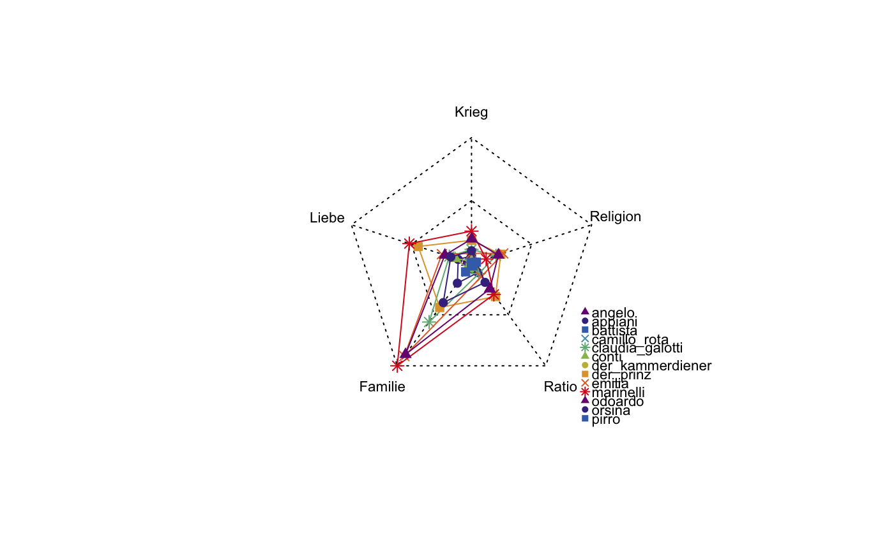

plotSpiderWebs.RdGenerates spider-web like plot. Spider webs may look cool, but they are terrible to interpret. You should think of using a bar chart to represent the same information. You have been warned.
plotSpiderWebs(dstat, symbols = c(17, 16, 15, 4, 8), cglcol = "black", legend = TRUE, legend.cex = 0.7, legend.pos.x = "bottomright", legend.pos.y = NA, legend.horizontal = FALSE, pcol = qd.colors, ...)
| dstat | A data frame containing data, e.g., output from dictionaryStatistics() |
|---|---|
| symbols | Symbols to be used in the plot |
| cglcol | The color for the spider net |
| legend | Whether to print a legend |
| legend.cex | Scaling factor for legend |
| legend.pos.x | X position of legend |
| legend.pos.y | Y position of legend |
| legend.horizontal | Whether to print legend horizontally or vertically |
| pcol | The line color(s) |
| ... | Miscellaneous arguments to be given for radarchart(). |
radar charts and spider web plots are dangerous, they can easily become misleading. They are in this package for historic reasons, but should not be used anymore.
data(rksp.0) fnames <- c("Krieg", "Liebe", "Familie", "Ratio","Religion") ds <- dictionaryStatistics(rksp.0, normalizeByField=TRUE, fieldnames=fnames) plotSpiderWebs(ds)#> Warning: spider webs may look cool, but they are terrible to interpret. You should think of using a bar chart to represent the same information. You have been warned.